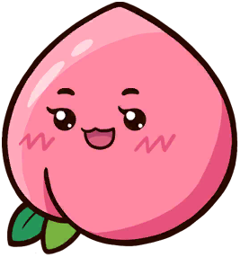
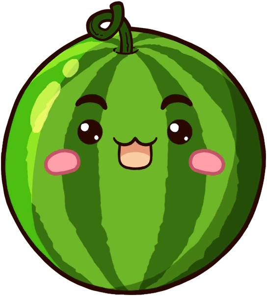
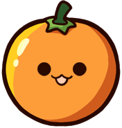
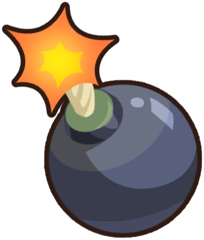
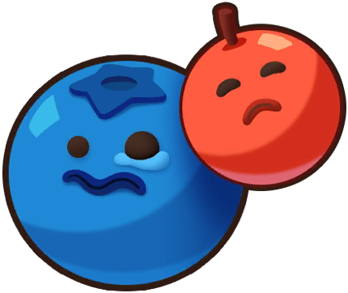
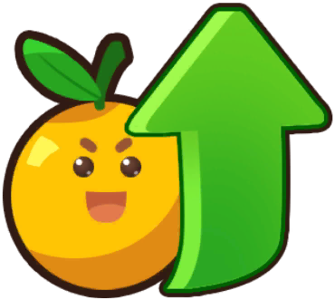
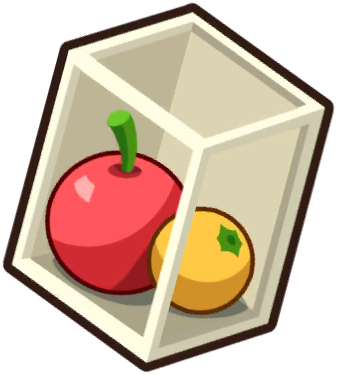

A LITTLE JOY, EVERY DROP



让一样的水果碰在一起，慢慢合出属于你的大西瓜。




每局每种道具可用 1 次，用后显示「已用」，重开后恢复。取消选择或点空白不扣次数。炸弹点掉一颗水果；「去掉最小」每次只移除一颗最小水果；升级点选一颗水果升一级（西瓜已是最高级）；摇晃让水果重新滚动。选目标时会暂停，点空白不会投放水果。
进度和最高分保存在当前浏览器。清除网站数据会清除记录。
当前这篮水果会清空，最高纪录会好好保留。